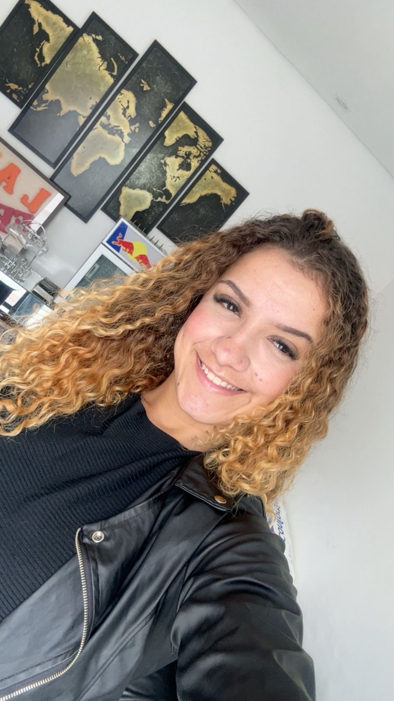

Título da Postagem
Aqui você pode escrever textos informativos, notícias, curiosidades ou conteúdos educativos. O site é totalmente personalizável.

Aqui você pode escrever textos informativos, notícias, curiosidades ou conteúdos educativos. O site é totalmente personalizável.
Maria é uma criadora de conteúdo apaixonada por tecnologia, design e educação digital. Ela gosta de compartilhar dicas, curiosidades e conteúdos informativos para ajudar outras pessoas a aprenderem de forma simples e divertida.
Além disso, Maria trabalha com desenvolvimento web e criação de projetos interativos utilizando HTML, CSS e JavaScript.

Joyce Bezerra, de 28 anos, é engenheira civil formada pela Unimetrocamp com o apoio do PROUNI. Residente em Hortolândia (SP), superou um início de carreira desafiador, atuou temporariamente na área comercial e hoje consolida sua paixão profissional trabalhando no setor de Infraestrutura.

Julia Costa, de 21 anos, cursa Psicologia no UNASP em Hortolândia (SP), com o objetivo de atuar na área criminal. Bolsista pelo ENEM, superou os desafios de adaptação e hoje destaca a qualidade dos professores e a grade curricular que prepara para diversas áreas além da clínica.

Maria Eduarda Andrade Rocha, 19 anos, cursa História na UFSJ via SISU. Natural de São João del-Rei (MG), superou a mudança de estado e estuda à noite, focando no sonho de unir a paixão histórica à educação.

Maryana Freschi, 22 anos, cursa Medicina Veterinária na Anhanguera de Campinas com bolsa do ENEM. Residente em Hortolândia (SP), realiza seu sonho de infância focada na saúde e no bem-estar dos animais.

Raquel Rodrigues, 23 anos, é graduada em Direito pelo UNASP e reside em Hortolândia (SP). Aprovada na OAB, hoje faz pós-graduação e atua como estagiária de gabinete no TJ-SP, auxiliando um magistrado na elaboração de sentenças.

Stefany Morais de Oliveira, de 27 anos, é técnica de enfermagem concursada em Campinas e enfermeira graduada pela Anhanguera com bolsa integral do PROUNI. Residente em Hortolândia (SP), superou a rotina de trabalho e estudos e hoje foca em concursos para a área de Saúde Pública.

Davi Nelson Brito Camargo, 20 anos, cursa Ciências Sociais na UNESP de Araraquara. Residente em Campinas (SP), organiza sua rotina de leituras com foco em concluir a graduação no prazo e desenvolver seu senso crítico.

Diego Santos, 32 anos, é engenheiro da computação e atua em desenvolvimento de software na IBM, carreira iniciada ainda na faculdade. Residente em Vinhedo (SP), destaca-se por sua resiliência acadêmica e forte capacidade de resolução de problemas.

Maria Eduarda da Silva, 18 anos, cursa Psicologia na PUC-Campinas com bolsa integral do ProUni. Residente em Monte Mor (SP), viaja diariamente para o campus em período integral e dedica-se à biblioteca e ao hub de inovação.

Rafaela Gomes dos Santos, 19 anos, cursa Engenharia Mecânica na Facamp via PROUNI. Residente em Hortolândia (SP), estuda motivada pelo interesse no setor automobilístico e pela alta empregabilidade da instituição.

Queite Neves, 36 anos, é formada em Gestão de RH pela Anhanguera via PROUNI. Residente em Hortolândia (SP), conciliou a faculdade com a IBM e hoje atua como Líder de Operações Estratégicas em Pré-vendas.

Maria Eduarda de Albuquerque, 19 anos, é estudante de Administração no UNASP e escolheu a área pela diversidade de oportunidades profissionais e de empreendedorismo. Sua trajetória destaca a importância da dedicação, da qualificação contínua e do desenvolvimento de habilidades para o mercado de trabalho.

Vanessa Martins, 29 anos, cursou Biomedicina na UFRJ via SISU. Residente em São Gonçalo (RJ), superava horas de transporte diário atraída pela excelência da instituição em pesquisa clínica e iniciação científica.

Você também pode inserir vídeos do YouTube para deixar o blog mais dinâmico e interativo.
O Diário de um Universitário nasceu da nossa própria jornada acadêmica. Entre prazos apertados, noites de estudo e a paixão pela tecnologia, percebemos que compartilhar essa rotina tornaria o caminho mais leve para nós e para outros estudantes.
Este blog é o reflexo da nossa parceria, dedicação e aprendizado diário. Um espaço feito para registrar nossos projetos, trocar conhecimentos sobre desenvolvimento web e criar uma comunidade onde ninguém precisa enfrentar os desafios da faculdade sozinho.